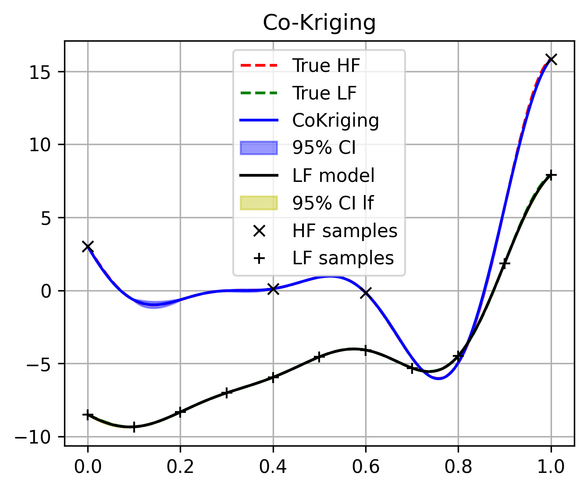

Multi fidelity surrogates¶
Single fidelity surrogates such as Kriging model already showed incredible performance on expensive black-box function problems. However, for extremely expensive problems, the single fidelity surrogates may not be able to provide accurate prediction results due to the lack of samples. Commonly, we can easily get low-fidelity samples for the same problem, those low-fidelity samples is much cheaper but less accurate than the high-fidelity samples.
To make use of those low-fidelity samplers to enhance the prediction accuracy, multi-fidelity surrogates are proposedMulti-fidelity GPs were initially developed by O’Hagan in the 1990s [1]. The author considered an auto-regressive model and demonstrated the potential of reaching similar accuracy to conventional GPs while requiring less computational time. Other multi-fidelity formulations have been proposed as well, but multi-fidelity GPs can be roughly categorized in two groups:
Note
By the following, the basic of Co-Kriging model will be briedly introduced, and for the details of other multi-fidelity surrogates, please refer to the original papers.
Co-Kriging model¶
1. basics of Co-Kriging model¶
The idea of auto-regression model can be expressed by [4] , which can be expressed as:
where the high-fidelity GP \(f_h \left ( \boldsymbol{x} \right)\) is the summation of two GPs (the low-fidelity \($f_l \left ( \boldsymbol{x} \right)\) and the difference \(f_d \left ( \boldsymbol{x} \right)$\)), and where \(\boldsymbol{\rho}\) is an additional hyper-parameter to control the correlation level between high-fidelity and low-fidelity. The auto-regression model expands the covariance matrix to the form of
2. Training and Inference¶
The training of Co-Kriging model consists of two stages. In the first stage,
we can train a low fidelity Kriging model Kriging based on the low-fidelity samples.
Then, combine the low-fidelity Kriging model and the high-fidelity samples, we can train a discrepancy Kriging model, and finding
the best \(\boldsymbol{\rho}\).
Implementation¶
The Co-Kriging model is implemented in Co_Kriging class.
The following example is given to illustrate the usage of the how to train and predict with Co-Kriging model:
# import necessary functions
import matplotlib.pyplot as plt
from mfpml.design_of_experiment.multifidelity_samplers import MFSobolSequence
from mfpml.models.co_kriging import CoKriging
from mfpml.problems.multifidelity_functions import Forrester_1b
# define function
func = Forrester_1b()
# define sampler
sampler = MFSobolSequence(design_space=func._design_space, seed=4)
sample_x = sampler.get_samples(num_hf_samples=4, num_lf_samples=12)
sample_y = func(sample_x)
# generate test samples
test_x = np.linspace(0, 1, 1000).reshape(-1, 1)
test_hy = func.hf(test_x)
test_ly = func.lf(test_x)
# initialize optimizer
optimizer = DE(num_gen=1000, num_pop=50, crossover_rate=0.5,
strategy="DE/best/1/bin")
# initialize the co-kriging model
coK = CoKriging(design_space=func._input_domain)
# train the co-kriging model
coK.train(sample_x, sample_y)
# get predictions
lf_pred, lf_std = coK.lf_model.predict(test_x, return_std=True)
hf_pred, hf_std = coK.predict(test_x, return_std=True)
# plot the results
fig, ax = plt.subplots(figsize=(5, 4))
plt.plot(test_x, test_hy, "r--", label="True HF")
plt.plot(test_x, test_ly, "g--", label="True LF")
plt.plot(test_x, cok_pre, "b-", label="CoKriging")
plt.fill_between(
test_x[:, 0],
cok_pre[:, 0] - 1.96 * cok_mse[:, 0],
cok_pre[:, 0] + 1.96 * cok_mse[:, 0],
alpha=0.4,
color="b",
label="95% CI",
)
plt.plot(test_x, lf_pred, "k-", label="LF model")
plt.fill_between(
test_x[:, 0],
lf_pred[:, 0] - 1.96 * lf_std[:, 0],
lf_pred[:, 0] + 1.96 * lf_std[:, 0],
alpha=0.4,
color="y",
label="95% CI lf",
)
plt.plot(sample_x["hf"], sample_y["hf"], "kx", label="HF samples")
plt.plot(sample_x["lf"], sample_y["lf"], "k+", label="LF samples")
plt.legend(loc="best")
plt.grid()
plt.show()
{kind=link}

Implemented multi-fidelity surrogates¶
Multifidelity surrogate |
API of sampling methods |
|---|---|
Co-Kriging |
|
Hierarchical Kriging |
|
Scaled Kriging |